There are three ways to tune on a desired frequency:
Using the buttons you will have various steps, according the Mode (SSB, AM etc).
NB: if you use AM below 1620 KHz, the step will be 9 KHz, otherwise it will be 5 KHz
You can select the bandwidth using the fixed values:
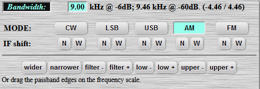
You can also click and drag the right or left part of the cursor and select the bandwidth:
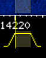
You can select between:
Tab Waterfall View:
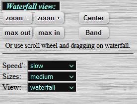
Press Save to Memory so to store a frequency. Frequencies are stored as a cocky, so if you clean them from browser then the memories will be deleted. To avoid deleting your memories, you can store them and download them locally. Then you can upload them every time you wish to do so, or move them to another WebSDR, which uses the same function.
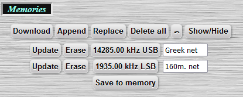
We recommend to use a name or a callsign so to use the chat. “Uknown” users cannot chat. Please respect the other users and the owner of the WebSDR.
Clicking on a user you will QSY to the frequency that the user is tuned. You may need to correct it if you have been moved to a side band frequency.
Audio Controls:
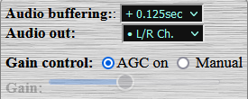
You can also record a QSO, download the file and reproduce it with your favorite audio player.
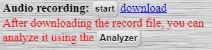
When pressing “Analyzer” you will be redirected to this page. Upload your record and then press “play”:
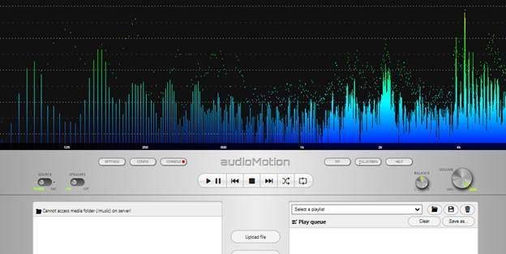
You can use Signal Strength Plot to check the signals:
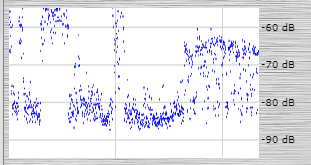
You can also use the Alternative Layout, pressing
You will then be redirected to the newer layout
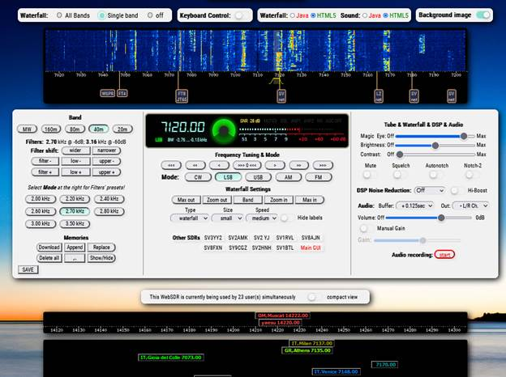
Firefox blocks all media with sound from playing automatically, by default. If you want a website to automatically play media or make other changes to your autoplay settings, you can use one of the methods below.
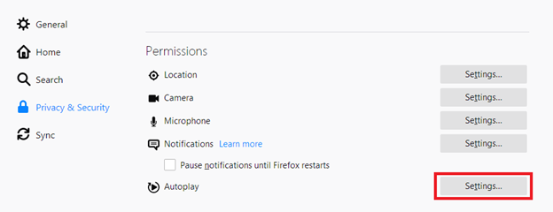
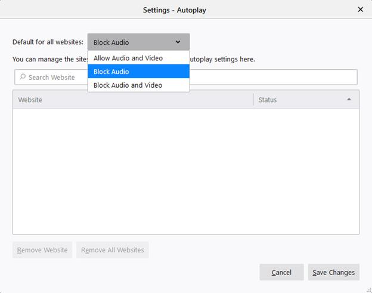